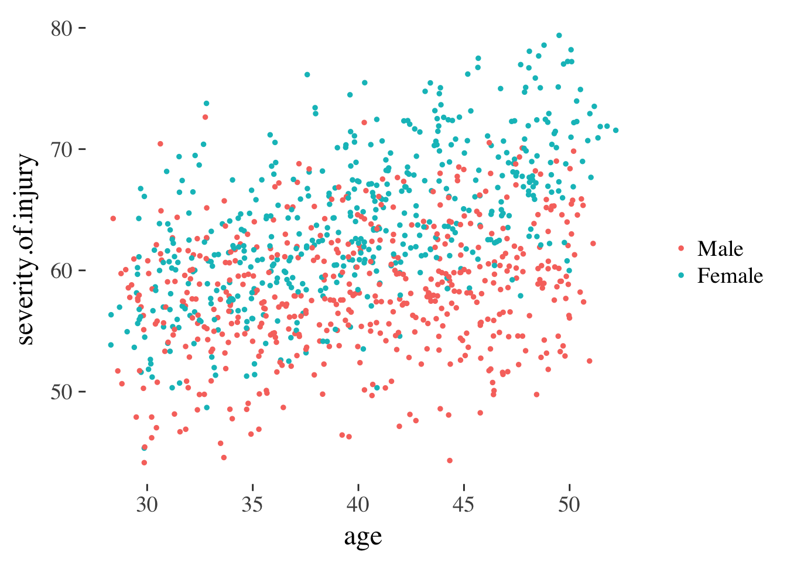
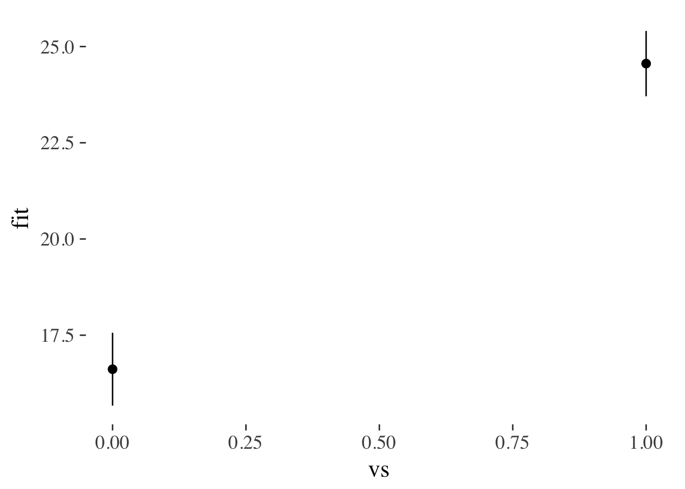
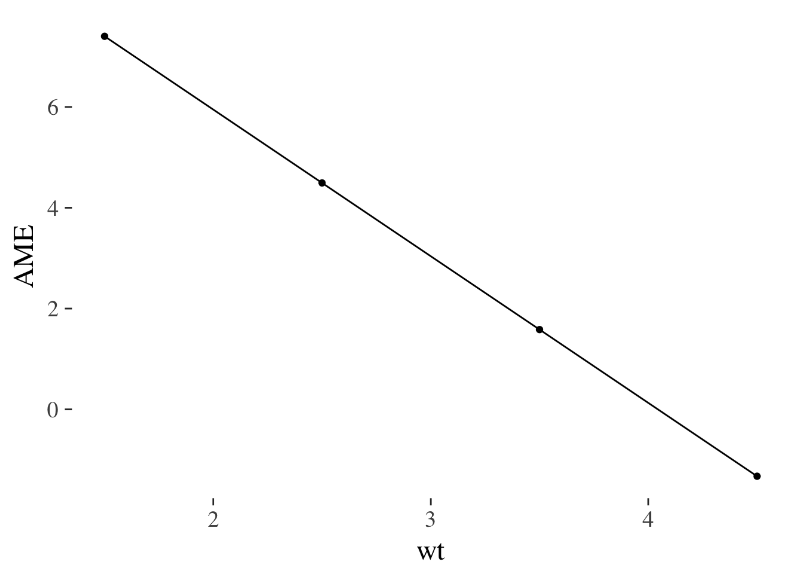

13 Making predictions
Objectives of this section:
- Distingish predicted means (predictions) from predicted effects (‘margins’)
- Calculate both predictions and marginal effects for a
lm() - Plot predictions and margins
- Think about how to plot effects in meaningful ways
13.1 Predictions vs margins
Before we start, let’s consider what we’re trying to achieve in making predictions from our models. We need to make a distinction between:
- Predicted means
- Predicted effects or marginal effects
Consider the example used in a previous section where we measured injury.severity after road accidents, plus two predictor variables: gender and age.
13.2 Predicted means
‘Predicted means’ (or predictions) refers to our best estimate for each category of person we’re interested in. For example, if age were categorical (i.e. young vs. older people) then might have 4 predictions to calculate from our model:
| Age | Gender | mean |
|---|---|---|
| Young | Male | ? |
| Old | Male | ? |
| Young | Female | ? |
| Old | Female | ? |
And as before, we might plot these data:
Figure 8.1: Point and line plot of injury severity by age and gender.
This plot uses the raw data, but these points could equally have been estimated from a statistical model which adjusted for other predictors.
13.3 Effects (margins)
Terms like: predicted effects, margins or marginal effects refer, instead, to the effect of one predictor.
There may be more than one marginal effect because the effect of one predictor can change across the range of another predictor.
Extending the example above, if we take the difference between men and women for each category of age, we can plot these differences. The steps we need to go through are:
- Reshape the data to be wide, including a separate column for injury scores for men and women
- Subtract the score for men from that of women, to calculate the effect of being female
- Plot this difference score
margins.plot <- inter.df %>%
# reshape the data to a wider format
reshape2::dcast(older~female) %>%
# calculate the difference between men and women for each age
mutate(effect.of.female = Female - Male) %>%
# plot the difference
ggplot(aes(older, effect.of.female, group=1)) +
geom_point() +
geom_line() +
ylab("Effect of being female") + xlab("") +
geom_hline(yintercept = 0)## Using severity.of.injury as value column: use value.var to override.margins.plot
As before, these differences use the raw data, but could have been calculated from a statistical model. In the section below we do this, making predictions for means and marginal effects from a lm().
13.4 Continuous predictors
In the examples above, our data were all categorical, which mean that it was straightforward to identify categories of people for whom we might want to make a prediction (i.e. young men, young women, older men, older women).
However, age is typically measured as a continuous variable, and we would want to use a grouped scatter plot to see this:
injuries %>%
ggplot(aes(age, severity.of.injury, group=gender, color=gender)) +
geom_point(size=1) +
scale_color_discrete(name="")
But to make predictions from this continuous data we need to fit a line through the points (i.e. run a model). We can do this graphically by calling geom_smooth() which attempts to fit a smooth line through the data we observe:
injuries %>%
ggplot(aes(age, severity.of.injury, group=gender, color=gender)) +
geom_point(alpha=.2, size=1) +
geom_smooth(se=F)+
scale_color_discrete(name="")
Figure 13.1: Scatter plot overlaid with smooth best-fit lines
And if we are confident that the relationships between predictor and outcome are sufficiently linear, then we can ask ggplot to fit a straight line using linear regression:
injuries %>%
ggplot(aes(age, severity.of.injury, group=gender, color=gender)) +
geom_point(alpha = .1, size = 1) +
geom_smooth(se = F, linetype="dashed") +
geom_smooth(method = "lm", se = F) +
scale_color_discrete(name="")
Figure 13.2: Scatter plot overlaid with smoothed lines (dotted) and linear predictions (coloured)
What these plots illustrate is the steps a researcher might take before fitting a regression model. The straight lines in the final plot represent our best guess for a person of a given age and gender, assuming a linear regression.
We can read from these lines to make a point prediction for men and women of a specific age, and use the information about our uncertainty in the prediction, captured by the model, to estimate the likely error.
To make our findings simpler to communicate, we might want to make estimates at specific ages and plot these. These ages could be:
- Values with biological or cultural meaning: for example 18 (new driver) v.s. 65 (retirement age)
- Statistical convention (e.g. median, 25th, and 75th centile, or mean +/- 1 SD)
We’ll see examples of both below.
13.5 Predicted means and margins using lm()
The section above details two types of predictions: predictions for means, and predictions for margins (effects). We can use the figure below as a way of visualising the difference:
gridExtra::grid.arrange(means.plot+ggtitle("Means"), margins.plot+ggtitle("Margins"), ncol=2)
Figure 13.3: Example of predicted means vs. margins. Note, the margin plotted in the second panel is the difference between the coloured lines in the first. A horizontal line is added at zero in panel 2 by convention.
13.5.1 Running the model
Lets say we want to run a linear model predicts injury severity from gender and a categorical measurement of age (young v.s. old).
Our model formula would be: severity.of.injury ~ age.category * gender. Here we fit it an request the Anova table which enables us to test the main effects and interaction19:
injurymodel <- lm(severity.of.injury ~ age.category * gender, data=injuries)
anova(injurymodel)## Analysis of Variance Table
##
## Response: severity.of.injury
## Df Sum Sq Mean Sq F value Pr(>F)
## age.category 1 4173.3 4173.3 154.573 < 2.2e-16 ***
## gender 1 8488.5 8488.5 314.404 < 2.2e-16 ***
## age.category:gender 1 1141.5 1141.5 42.279 1.25e-10 ***
## Residuals 996 26890.8 27.0
## ---
## Signif. codes: 0 '***' 0.001 '**' 0.01 '*' 0.05 '.' 0.1 ' ' 1Having saved the regression model in the variable injurymodel we can use this to make predictions for means and estimate marginal effects:
13.5.2 Making predictions for means
When making predictions, they key question to bear in mind is ‘predictions for what?’ That is, what values of the predictor variables are we going to use to estimate the outcome?
It goes like this:
- Create a new dataframe which contains the values of the predictors we want to make predictions at
- Make the predictions using the
predict()function. - Convert the output of
predict()to a dataframe and plot the numbers.
13.5.3 Step 1: Make a new dataframe
prediction.data <- data_frame(
age.category = c("young", "older", "young", "older"),
gender = c("Male", "Male", "Female", "Female")
)
prediction.data## # A tibble: 4 × 2
## age.category gender
## <chr> <chr>
## 1 young Male
## 2 older Male
## 3 young Female
## 4 older Female13.5.4 Step 2: Make the predictions
The R predict() function has two useful arguments:
newdata, which we set to our new data frame containing the predictor values of interestintervalwhich we here set to confidence20
injury.predictions <- predict(injurymodel, newdata=prediction.data, interval="confidence")
injury.predictions## fit lwr upr
## 1 57.14239 56.49360 57.79117
## 2 59.19682 58.56688 59.82676
## 3 60.79554 60.14278 61.44830
## 4 67.12521 66.47642 67.7739913.6 Making prdictions for margins (effects of predictors)
library('tidyverse')
m <- lm(mpg~vs+wt, data=mtcars)
m.predictions <- predict(m, interval='confidence')
mtcars.plus.predictions <- bind_cols(
mtcars,
m.predictions %>% as.data.frame()
)
prediction.frame <- expand.grid(vs=0:1, wt=2) %>% as.data.frame()
prediction.frame.plus.predictions <- bind_cols(
prediction.frame,
predict(m, newdata=prediction.frame, interval='confidence') %>% as.data.frame()
)
mtcars.plus.predictions %>% ggplot(aes(vs, fit, ymin=lwr, ymax=upr)) +
stat_summary(geom="pointrange")## No summary function supplied, defaulting to `mean_se()
prediction.frame.plus.predictions %>% ggplot(aes(vs, fit, ymin=lwr, ymax=upr)) + geom_pointrange()
prediction.frame.plus.predictions## vs wt fit lwr upr
## 1 0 2 24.11860 21.61207 26.62514
## 2 1 2 27.27297 25.57096 28.97499mtcars.plus.predictions %>% group_by(vs) %>%
summarise_each(funs(mean), fit, lwr, upr)## # A tibble: 2 × 4
## vs fit lwr upr
## <dbl> <dbl> <dbl> <dbl>
## 1 0 16.61667 14.93766 18.29568
## 2 1 24.55714 22.81586 26.2984313.7 Marginal effects
What is the effect of being black or female on the chance of you getting diabetes?
Two ways of computing, depending on which of these two you hate least:
- Calculate the effect of being black for someone who is 50% female (marginal effect at the means, MEM)
- Calculate the effect first pretending someone is black, then pretending they are white, and taking the difference between these estimate (average marginal effect, AME)
library(margins)
margins(m, at = list(wt = 1:2))## Warning in check_values(data, at): A 'at' value for 'wt' is outside
## observed data range (1.513,5.424)!## Average marginal effects at specified values## lm(formula = mpg ~ vs + wt, data = mtcars)## at(wt) vs wt
## 1 3.154 -4.443
## 2 3.154 -4.443m2 <- lm(mpg~vs*wt, data=mtcars)
summary(m2)##
## Call:
## lm(formula = mpg ~ vs * wt, data = mtcars)
##
## Residuals:
## Min 1Q Median 3Q Max
## -3.9950 -1.7881 -0.3423 1.2935 5.2061
##
## Coefficients:
## Estimate Std. Error t value Pr(>|t|)
## (Intercept) 29.5314 2.6221 11.263 6.55e-12 ***
## vs 11.7667 3.7638 3.126 0.0041 **
## wt -3.5013 0.6915 -5.063 2.33e-05 ***
## vs:wt -2.9097 1.2157 -2.393 0.0236 *
## ---
## Signif. codes: 0 '***' 0.001 '**' 0.01 '*' 0.05 '.' 0.1 ' ' 1
##
## Residual standard error: 2.578 on 28 degrees of freedom
## Multiple R-squared: 0.8348, Adjusted R-squared: 0.8171
## F-statistic: 47.16 on 3 and 28 DF, p-value: 4.497e-11m2.margins <- margins(m2, at = list(wt = 1.5:4.5))## Warning in check_values(data, at): A 'at' value for 'wt' is outside
## observed data range (1.513,5.424)!summary(m2.margins)## factor wt AME SE z p lower upper
## vs 1.5 7.4021 2.0902 3.5414 0.0004 3.3054 11.4988
## vs 2.5 4.4924 1.2375 3.6303 0.0003 2.0670 6.9178
## vs 3.5 1.5827 1.2845 1.2321 0.2179 -0.9349 4.1003
## vs 4.5 -1.3270 2.1736 -0.6105 0.5415 -5.5871 2.9331
## wt 1.5 -4.7743 0.5853 -8.1569 0.0000 -5.9215 -3.6271
## wt 2.5 -4.7743 0.5854 -8.1563 0.0000 -5.9216 -3.6270
## wt 3.5 -4.7743 0.5854 -8.1560 0.0000 -5.9216 -3.6270
## wt 4.5 -4.7743 0.5854 -8.1561 0.0000 -5.9216 -3.6270summary(m2.margins) %>% as.data.frame() %>%
filter(factor=="vs") %>%
ggplot(aes(wt, AME)) +
geom_point() + geom_line()
13.8 With continuous covariates
- Run 2 x Continuous Anova
- Predict at different levels of
14 Visualising interactions from linear models
Steps this page will work through:
- Running the the model (first will be a 2x2 between Anova)
- Using
predict(). - Creating predictions at specific values
- Binding predictions and the original data together.
- Using GGplot to layer points, lines and error bars.
Because this is simulated data, the main effects and interactions all have tiny p values.↩
This gives us the confidence interval for the prediction, which is the range within which we would expect the true value to fall, 95% of the time, if we replicated the study. We could ask instead for the
predictioninterval, which would be the range within which 95% of new observations with the same predictor values would fall. For more on this see the section on confidence v.s. prediction intervals↩